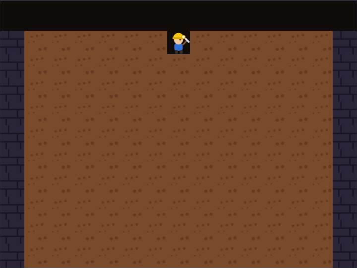
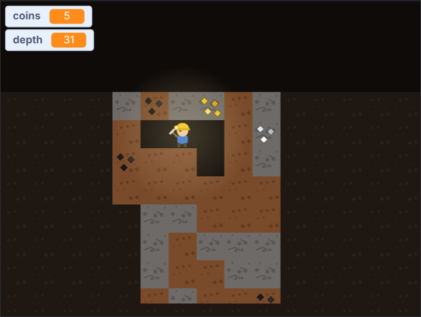
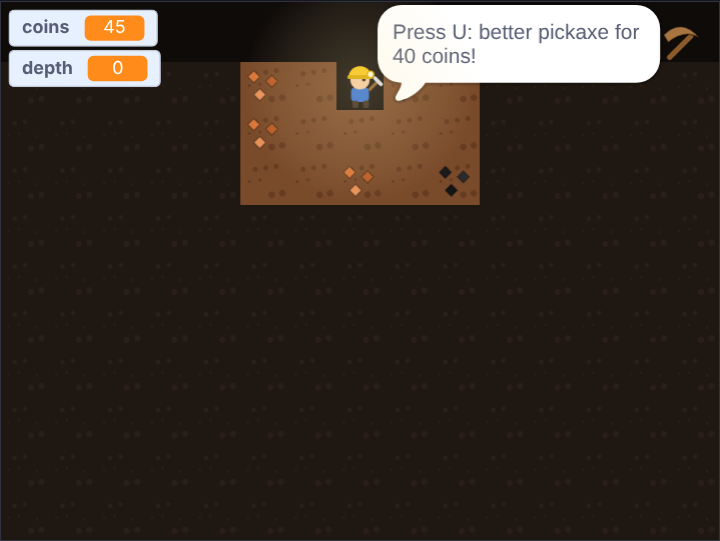
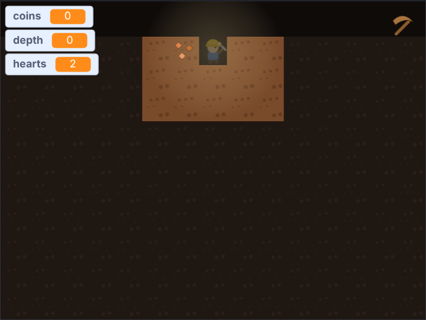

<title>Lantern Deep Tutorial</title>
<meta name="claude:viewport-fit-sides" content="cover">
<link rel="preconnect" href="https://fonts.googleapis.com">
<link rel="stylesheet" href="https://fonts.googleapis.com/css2?family=Fredoka:wght@500;600&family=Atkinson+Hyperlegible:ital,wght@0,400;0,700;1,400&family=JetBrains+Mono:wght@400&display=swap">
<style>
/* Layout: one reading column; each step is a numbered section: the big idea, the blocks, a picture and a checkpoint file. */
:root {
  --bg: #f4f3fa; --surface: #ffffff; --fg: #1f1d33; --muted: #5c5a74; --line: #dddbea;
  --accent: #7a4a12; --accent-soft: #f7ead2; --drone: #b45309; --code-bg: #f8f7fd;
  --display: "Fredoka", "Trebuchet MS", system-ui, sans-serif;
  --body: "Atkinson Hyperlegible", "Segoe UI", system-ui, sans-serif;
  --mono: "JetBrains Mono", ui-monospace, Consolas, monospace;
}
@media (prefers-color-scheme: dark) { :root:not([data-theme="light"]) {
  --bg: #13121f; --surface: #1c1a2c; --fg: #ebe9f7; --muted: #a6a3bf; --line: #312e47;
  --accent: #f2c27a; --accent-soft: #3a2a1c; --drone: #f2a065; --code-bg: #232036; color-scheme: dark; } }
:root[data-theme="dark"] {
  --bg: #13121f; --surface: #1c1a2c; --fg: #ebe9f7; --muted: #a6a3bf; --line: #312e47;
  --accent: #f2c27a; --accent-soft: #3a2a1c; --drone: #f2a065; --code-bg: #232036; color-scheme: dark; }

body { background: var(--bg); color: var(--fg); font: 18px/1.6 var(--body);
  padding-left: max(16px, env(safe-area-inset-left, 0px)); padding-right: max(16px, env(safe-area-inset-right, 0px)); padding-block: 40px 72px; }
main { max-width: 760px; margin: 0 auto; display: grid; gap: 48px; }
main > *, .step > *, .stack > *, .intro > * { min-width: 0; }
h1, h2, h3 { font-family: var(--display); font-weight: 600; text-wrap: balance; margin: 0; line-height: 1.15; }
h1 { font-size: clamp(2rem, 6vw, 2.9rem); }
h2 { font-size: 1.7rem; }
h3 { font-size: 1.15rem; font-weight: 500; }
p { margin: 0; max-width: 66ch; }
a { color: var(--accent); }
code { font: 0.88em var(--mono); background: var(--code-bg); padding: 1px 5px; border-radius: 4px; overflow-wrap: anywhere; }
.eyebrow { font: 600 0.78rem var(--body); letter-spacing: 0.08em; text-transform: uppercase; color: var(--drone); }
.stack { display: grid; gap: 16px; min-width: 0; }
.intro { display: grid; gap: 14px; }
.intro p { color: var(--muted); font-size: 1.08rem; }

.plan { list-style: none; margin: 0; padding: 0; display: grid; gap: 6px; counter-reset: plan; }
.plan li { display: flex; flex-wrap: wrap; align-items: baseline; gap: 4px 12px; padding: 8px 12px; border-radius: 6px; counter-increment: plan; }
.plan li::before { content: counter(plan); font: 600 0.95rem var(--display); color: var(--muted); width: 1.4em; }
.plan .name { font-weight: 700; }
.plan a { text-decoration: none; }
.plan a:hover .name, .plan a:focus-visible .name { text-decoration: underline; }
.plan .what { color: var(--muted); flex: 1 1 220px; }

.step { display: grid; gap: 20px; border-top: 2px solid var(--line); padding-top: 32px; }
.step-head { display: flex; align-items: center; gap: 14px; }
.num { flex: none; width: 44px; height: 44px; border-radius: 50%; display: grid; place-items: center;
  background: var(--accent); color: var(--surface); font: 600 1.3rem var(--display); }
ol.do { margin: 0; padding-left: 1.3em; display: grid; gap: 8px; max-width: 66ch; }

.blocks-panel { background: var(--surface); border: 1px solid var(--line); border-radius: 8px; padding: 16px; overflow-x: auto; }
.blocks-panel .label { font: 700 0.78rem var(--body); letter-spacing: 0.06em; text-transform: uppercase; color: var(--muted); margin-bottom: 8px; }
pre.blocks { margin: 0; font: 13px var(--mono); white-space: pre; }

.note { border-left: 3px solid var(--drone); padding: 2px 0 2px 14px; color: var(--fg); }
.note b { color: var(--drone); }
figure { margin: 0; display: grid; gap: 8px; }
figure img { width: 100%; border-radius: 8px; border: 1px solid var(--line); display: block; }
figcaption { font-size: 0.9rem; color: var(--muted); }

.table-wrap { overflow-x: auto; }
table { border-collapse: collapse; font-variant-numeric: tabular-nums; min-width: 420px; }
th, td { text-align: right; padding: 6px 14px; border-bottom: 1px solid var(--line); }
th:first-child, td:first-child { text-align: left; }
th { font-size: 0.82rem; color: var(--muted); font-weight: 700; }

.checkpoint { display: flex; flex-wrap: wrap; align-items: center; gap: 10px 16px; background: var(--surface);
  border: 1px solid var(--line); border-radius: 8px; padding: 12px 16px; }
.checkpoint p { flex: 1 1 260px; color: var(--muted); font-size: 0.95rem; }
.btn { display: inline-block; font-weight: 700; text-decoration: none; color: var(--surface); background: var(--accent);
  padding: 8px 16px; border-radius: 6px; white-space: nowrap; }
.btn:hover, .btn:focus-visible { outline: 3px solid var(--accent-soft); outline-offset: 1px; }
.try { margin: 0; padding-left: 1.3em; display: grid; gap: 6px; }
svg.coords text { font: 11px var(--body); fill: var(--muted); }
.scripts { display: flex; flex-wrap: wrap; gap: 12px; align-items: flex-start; }
.scripts .blocks-panel { flex: 0 1 auto; max-width: 100%; min-width: 0; }
.tag { font-size: 0.7rem; font-weight: 700; letter-spacing: 0.04em; padding: 1px 7px; border-radius: 999px; margin-left: 6px; }
.tag.new { background: var(--accent); color: var(--surface); }
.tag.changed { border: 1px solid var(--drone); color: var(--drone); }
.flow { list-style: none; margin: 0; padding: 0; display: flex; flex-wrap: wrap; gap: 8px; counter-reset: none; }
.flow li { display: grid; gap: 2px; padding: 10px 14px; border-radius: 8px; background: var(--surface); border: 1px solid var(--line);
  flex: 1 1 130px; min-width: 0; position: relative; }
.flow li b { font: 600 1.05rem var(--display); color: var(--accent); }
.flow li span { font-size: 0.85rem; color: var(--muted); }
footer { color: var(--muted); font-size: 0.92rem; border-top: 2px solid var(--line); padding-top: 24px; }
.idea { background: var(--accent-soft); border-radius: 8px; padding: 12px 16px; display: grid; gap: 4px; max-width: 66ch; }
.make { display: grid; gap: 4px; max-width: 66ch; font-size: 0.95rem; }
.make b { color: var(--drone); }
.idea b { font: 600 1rem var(--display); color: var(--accent); }
</style>

<main>
  <header class="intro">
    <span class="eyebrow">Scratch tutorial for older kids (10+) · 7 steps · a few afternoons</span>
    <h1>Lantern Deep</h1>
    <p>Dig down forever. Your lantern only shows the squares right around you: coal, gold, gems, or lava. Collect coins, buy better pickaxes, and watch out for crawlers in the caves.</p>
    <p>This is a bigger project: about 230 lines of blocks in the end. Every step is a game you can play, and every step has a file you can download if you get stuck. You need the Scratch editor: <a href="https://scratch.mit.edu/projects/editor/">scratch.mit.edu/projects/editor</a>.</p>
    <div class="checkpoint">
      <p>Start here: the starter project has all the costumes, and no code yet.</p>
      <a class="btn" href="https://github.com/AJosephsen/MyTemporaryJunk/raw/main/scratch/tutorials/lantern-deep/starter.sb3">Download starter.sb3</a>
    </div>
  </header>

  <section class="stack" aria-label="Steps">
    <h3>The steps</h3>
    <ol class="plan">
      <li><a href="#step-1"><span class="name">Rows of squares</span></a><span class="what">Clones copy their own variables</span></li>
      <li><a href="#step-2"><span class="name">Dig with an invisible pick</span></a><span class="what">Ask the square, don't search for it</span></li>
      <li><a href="#step-3"><span class="name">Scroll down forever</span></a><span class="what">Move the world, not the miner</span></li>
      <li><a href="#step-4"><span class="name">In the dark</span></a><span class="what">Only what the light touches is shown</span></li>
      <li><a href="#step-5"><span class="name">Better pickaxes</span></a><span class="what">Upgrades change one number</span></li>
      <li><a href="#step-6"><span class="name">Lava and hearts</span></a><span class="what">Danger you can see coming</span></li>
      <li><a href="#step-7"><span class="name">Cave crawlers</span></a><span class="what">A clone that walks and looks</span></li>
    </ol>
    <p class="note"><b>Tip:</b> the block pictures can't show the <b>Run without screen refresh</b> tick. Each step says which blocks need it: only <code>make rows</code> and <code>choose kind</code>.</p>
  </section>

  <section class="step" id="step-1">
    <div class="step-head"><span class="num">1</span><h2>Rows of squares</h2></div>
    <div class="idea"><b>Big idea: clones copy their own variables</b><span>The <b>Square</b> sprite sets its own variables (<b>row</b>, <b>col</b>, <b>kind</b>, <b>hp</b>), then makes a clone. The clone gets a copy of those variables, so every square knows who it is.</span></div>
    <p class="make"><span><b>Make:</b> variables <code>mrow</code>, <code>mcol</code>, <code>lastRow</code> (for all sprites); on the <b>Square</b> sprite the variables <code>isClone</code>, <code>row</code>, <code>col</code>, <code>kind</code>, <code>hp</code> <b>for this sprite only</b>; messages <code>clear</code> and <code>tick</code>; the block <code>make rows</code> with <b>Run without screen refresh</b> ticked.</span></p>
    <!--changed:1-->
    <ul class="do">
      <li>The Stage sends <b>tick</b> every frame, like a clock. Everything happens on tick.</li>
      <li><b>make rows</b> keeps making rows until there are 9 rows below the miner. A row is 15 squares; the first and last are bedrock.</li>
      <li>The costume number is <b>kind + 1</b>: costume 1 is the dark costume (used in step 4), then dirt, stone, bedrock and so on.</li>
      <li>Rows are numbers, not pixels: row 0 is at the top, and a square's y is <b>124 − row × 32</b>.</li>
    </ul>
    <figure>
      
      <figcaption>The mine: 149 clones, each with its own row and column.</figcaption>
    </figure>
    <div class="checkpoint">
      <p>Stuck? This is the project at the end of step 1.</p>
      <a class="btn" href="https://github.com/AJosephsen/MyTemporaryJunk/raw/main/scratch/tutorials/lantern-deep/step1.sb3">Download step1.sb3</a>
    </div>
  </section>

  <section class="step" id="step-2">
    <div class="step-head"><span class="num">2</span><h2>Dig with an invisible pick</h2></div>
    <div class="idea"><b>Big idea: ask the square, don't search for it</b><span>The miner can't see which clone is next to him. So he puts an invisible <b>Pick</b> dot on the square he wants, and sends <b>dig</b>. Only the square touching the Pick answers: it takes a hit and says so by setting <b>hit</b> to 1. If nobody answers, the square is empty and the miner steps in.</span></div>
    <p class="make"><span><b>Make:</b> the <b>Pick</b> sprite (a tiny dot, already in the starter); variables <code>dx</code>, <code>dy</code>, <code>hit</code>, <code>cool</code>; messages <code>aim</code> and <code>dig</code>; on the Miner the block <code>try (dx) (dy)</code> with two inputs. Leave its screen refresh tick <b>off</b>.</span></p>
    <!--changed:2-->
    <ul class="do">
      <li>The Pick is ghosted to 100: invisible, but it still counts for <b>touching</b>. (A hidden sprite touches nothing!)</li>
      <li><b>broadcast and wait</b> waits until every square has had its turn, so <b>hit</b> is ready when the miner looks at it.</li>
      <li><b>cool</b> is a short pause between steps, so one key press doesn't dig ten squares.</li>
      <li>The Miner has his own <b>forever</b> loop instead of a tick script. A tick script would be restarted by the next tick while it waits.</li>
    </ul>
    <figure>
      
      <figcaption>Arrow keys dig. Dirt takes one hit.</figcaption>
    </figure>
    <div class="checkpoint">
      <p>Stuck? This is the project at the end of step 2.</p>
      <a class="btn" href="https://github.com/AJosephsen/MyTemporaryJunk/raw/main/scratch/tutorials/lantern-deep/step2.sb3">Download step2.sb3</a>
    </div>
  </section>

  <section class="step" id="step-3">
    <div class="step-head"><span class="num">3</span><h2>Scroll down forever</h2></div>
    <div class="idea"><b>Big idea: move the world, not the miner</b><span>The miner can dig deeper than the screen. Instead of moving him down, everything moves up by <b>scroll</b>. New rows appear below as you dig, and rows far above are deleted, so there are never too many clones (Scratch allows 300).</span></div>
    <p class="make"><span><b>Make:</b> variables <code>scroll</code>, <code>target</code> and <code>depth</code>.</span></p>
    <!--changed:3-->
    <ul class="do">
      <li>Every y becomes <b>124 − row × 32 + scroll</b>. Change it in the Square, Miner and Pick scripts.</li>
      <li><b>scroll</b> moves a quarter of the way to <b>target</b> each frame, so the view glides instead of jumping.</li>
      <li>A square deletes itself when its y would be above 200. Use the sum, not <b>y position</b>: Scratch keeps sprites on the Stage, so y position never gets that high!</li>
    </ul>
    <figure>
      
      <figcaption>Twelve rows down, and still digging.</figcaption>
    </figure>
    <div class="checkpoint">
      <p>Stuck? This is the project at the end of step 3.</p>
      <a class="btn" href="https://github.com/AJosephsen/MyTemporaryJunk/raw/main/scratch/tutorials/lantern-deep/step3.sb3">Download step3.sb3</a>
    </div>
  </section>

  <section class="step" id="step-4">
    <div class="step-head"><span class="num">4</span><h2>In the dark</h2></div>
    <div class="idea"><b>Big idea: only what the light touches is shown</b><span>Every square starts with the dark costume. A <b>Lantern</b> sprite, a soft glow, follows the miner. When a square touches the Lantern it switches to its real costume, and stays lit. Now you must dig to find out what is there.</span></div>
    <p class="make"><span><b>Make:</b> the <b>Lantern</b> sprite (in the starter); variables <code>coins</code> and <code>dice</code>; on the Square <code>value</code> and <code>lit</code> <b>for this sprite only</b>; the block <code>choose kind</code> with <b>Run without screen refresh</b> ticked.</span></p>
    <!--changed:4-->
    <ul class="do">
      <li><b>choose kind</b> rolls a dice from 1 to 1000. Low numbers are treasure; deeper rows allow better treasure (silver from row 13, gold from 26, rubies 46, emeralds 66, diamonds 91).</li>
      <li>Stone gets more common the deeper you go: <b>pick random 1 to 100 &lt; row</b>.</li>
      <li>Every <b>if</b> in <b>choose kind</b> has the same shape. Build one, then duplicate it and change the numbers.</li>
    </ul>
    <figure>
      
      <figcaption>Only squares near the lantern show what they are.</figcaption>
    </figure>
    <div class="checkpoint">
      <p>Stuck? This is the project at the end of step 4.</p>
      <a class="btn" href="https://github.com/AJosephsen/MyTemporaryJunk/raw/main/scratch/tutorials/lantern-deep/step4.sb3">Download step4.sb3</a>
    </div>
  </section>

  <section class="step" id="step-5">
    <div class="step-head"><span class="num">5</span><h2>Better pickaxes</h2></div>
    <div class="idea"><b>Big idea: upgrades change one number</b><span>Stone needs 3 hits and hard rock 8. A better pickaxe makes <b>power</b> twice as big, and every hit takes <b>power</b> away from the square's <b>hp</b>. One variable makes the whole game feel different.</span></div>
    <p class="make"><span><b>Make:</b> variables <code>power</code>, <code>pickLevel</code>, <code>pickaxe</code> and <code>cost</code>; the <b>Hud</b> sprite (in the starter, with the four pickaxe costumes); the block <code>upgrade</code> (no tick).</span></p>
    <!--changed:5-->
    <ul class="do">
      <li>The miner says when you can afford the next pickaxe: 40, 150 and 500 coins.</li>
      <li><b>wait until not key u pressed</b> stops one long press from buying two upgrades.</li>
    </ul>
    <figure>
      
      <figcaption>Enough coins: press U.</figcaption>
    </figure>
    <div class="checkpoint">
      <p>Stuck? This is the project at the end of step 5.</p>
      <a class="btn" href="https://github.com/AJosephsen/MyTemporaryJunk/raw/main/scratch/tutorials/lantern-deep/step5.sb3">Download step5.sb3</a>
    </div>
  </section>

  <section class="step" id="step-6">
    <div class="step-head"><span class="num">6</span><h2>Lava and hearts</h2></div>
    <div class="idea"><b>Big idea: danger you can see coming</b><span>Lava squares appear from row 16. The lantern shows them before you dig, so careful players are safe. Digging into lava sends <b>ouch</b>: you lose a heart, then blink for a moment while you are safe.</span></div>
    <p class="make"><span><b>Make:</b> variables <code>hearts</code>, <code>safe</code> and <code>phase</code>; the message <code>ouch</code>.</span></p>
    <!--changed:6-->
    <ul class="do">
      <li>Lava never breaks: the dig script sends <b>ouch</b> instead of taking away hp.</li>
      <li><b>safe</b> counts down every frame. While it is above 0, more ouches don't count, so one touch costs one heart.</li>
      <li>With no hearts left, <b>phase</b> becomes <b>over</b> and the miner stops digging.</li>
    </ul>
    <figure>
      
      <figcaption>Ouch! Two hearts left.</figcaption>
    </figure>
    <div class="checkpoint">
      <p>Stuck? This is the project at the end of step 6.</p>
      <a class="btn" href="https://github.com/AJosephsen/MyTemporaryJunk/raw/main/scratch/tutorials/lantern-deep/step6.sb3">Download step6.sb3</a>
    </div>
  </section>

  <section class="step" id="step-7">
    <div class="step-head"><span class="num">7</span><h2>Cave crawlers</h2></div>
    <div class="idea"><b>Big idea: a clone that walks and looks</b><span>Deeper than row 20, some rows get a small cave: five squares are left out, and a <b>Crawler</b> clone is put inside. It walks a step, and if it now touches a Square it steps back and turns around. Touching the miner sends <b>ouch</b>.</span></div>
    <p class="make"><span><b>Make:</b> the <b>Crawler</b> sprite (in the starter) with variables <code>isClone</code>, <code>row</code>, <code>x</code>, <code>speed</code> <b>for this sprite only</b>; variables <code>cave</code>, <code>caveFrom</code>, <code>crawlRow</code>, <code>crawlCol</code>; the message <code>crawler</code>.</span></p>
    <!--changed:7-->
    <ul class="do">
      <li>The crawler's glowing eyes are drawn bright, so you can see it even in the dark.</li>
      <li>The Square sprite tells the Crawler where the cave is with <b>crawlRow</b> and <b>crawlCol</b>, and sends <b>crawler</b>.</li>
      <li>This is the whole game! Try it out, then make it your own.</li>
    </ul>
    <figure>
      
      <figcaption>Watch out for glowing eyes.</figcaption>
    </figure>
    <div class="checkpoint">
      <p>Stuck? This is the project at the end of step 7.</p>
      <a class="btn" href="https://github.com/AJosephsen/MyTemporaryJunk/raw/main/scratch/tutorials/lantern-deep/step7.sb3">Download step7.sb3</a>
    </div>
  </section>

  <section class="stack">
    <h3>Make it your own</h3>
    <ul class="try">
      <li>Add a new treasure: draw a costume, give it a <b>kind</b> number, and add an <b>if</b> to <b>choose kind</b>.</li>
      <li>Make the lantern bigger as a reward at depth 50: change its <b>size</b>.</li>
      <li>Add a sound when you collect treasure, and another one for ouch.</li>
      <li>Show your best depth: make a variable <b>record</b>, and set it when <b>depth</b> is bigger.</li>
    </ul>
  </section>

  <footer>Made with the Scratch workbench in this repository. The blocks on this page are drawn from the real project files, so they always match the downloads; the last step is the finished game.</footer>
</main>

<script src="https://cdn.jsdelivr.net/npm/scratchblocks@3.6.4/build/scratchblocks.min.js"></script>
<script>
  scratchblocks.renderMatching("pre.blocks", { style: "scratch3", languages: ["en"], scale: 0.75 });
</script>
